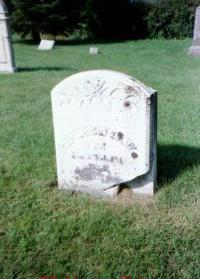
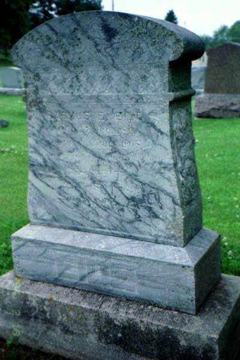
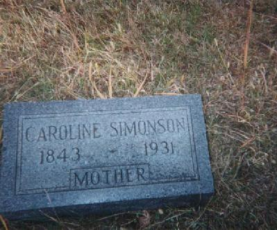

Ancestory

EILEF LARSEN KOLVE
Born: Kolve Farm, Voss, Norway // February 2, 1813
Emigrated: 1857
Married: Gunhild Andersdatter Sygnaberde
Died: Primrose area Dane County, Wisconsin // February 20, 1882
Buried: East Primrose Lutheran Church Cemetery, Dane County, Wisconsin
GUNHILD ANDERSDATTER SYGNABERDE KOLVE
Eilef Larsen Kolve's wife
Born: Voss, Norway // 1816
Emigrated: 1857
Married: Eilef Larsen Kolve
Died: Primrose area Dane County, Wisconsin // January 22, 1862
Buried: East Primrose Lutheran Church Cemetery, Dane County, Wisconsin
LARS LARSEN KOLVE
Born: Kolve Farm, Voss, Norway // May 3, 1818
Emigrated: 1850
Married: Britha Ivarsdatter
Died: Mt. Horeb, Wisconsin // February 1894
Buried: East Primrose Lutheran Church Cemetery, Dane County, Wisconsin
BRITHA IVARSDATTER KOLVE
Lars Larsen Kolve's wife
Born: Kvarekval Farm, Voss, Norway // 1820
Emigrated: 1850
Married: Lars Larsen Kolve
Died: 1905
Buried: East Primrose Lutheran Church Cemetery, Dane County, Wisconsin
The following are Eilef and Gunhild's children:
GURI EILEFSDATTER KOLVE EIDE
Born: Kolve Farm, Voss, Norway // September 21, 1839
Emigrated: 1857
Married: Rasmus Erickson Eide // 1860 in Dane County, Wisconsin (more information about him is on the Eide page)
Died: Forest City, Iowa // December 31, 1913
Buried: Oakland Cemetery, Forest City, Iowa
IVEN EILEFSEN KOLVE
Born: Kolve Farm, Voss, Norway // 1841
Emigrated: 1857
Died: 1860
Buried: Unknown
ANDERS EILEFSEN KOLVE
Born: Kolve Farm, Voss, Norway // 1844
Emigrated: 1857
Died: 1868
Buried: Unknown
ANFIN EILEFSEN KOLVE
Born: Kolve Farm, Voss, Norway // 1847
Emigrated: 1857
Died: Unknown
Buried: Unknown
OLE EILEFSEN KOLVE
Born: Kolve Farm, Voss, Norway // February 9, 1849
Emigrated: 1857
Died: Primrose area Dane County, Wisconsin // February 20, 1871
Buried: East Primrose Luthern Church Cemetery, Dane County, Wisconsin
LARS EILEFSEN KOLVE
Born: Kolve Farm, Voss, Norway // 1851
Emigrated: 1857
Died: Unknown
Buried: Unknown
KNUT EILEFSEN KOLVE
Born: Kolve Farm, Voss, Norway August 10, 1854
Emigrated: 1857
Died: Primrose area Dane County, Wisconsin // March 10, 1871
Buried: East Primrose Luthern Church Cemetery, Dane County, Wisconsin
The following are Lars and Britha's children:
KARI (CAROLINE) LARSDATTER KOLVE SIMONSON
Born: Voss, Norway // June 19, 1843
Emigrated: 1850
Married: Torstein Simonson // October 18, 1866 in Madison, Wisconsin
Died: O'Neill, Nebraska // May 16, 1931
Buried: Prospect Hill Cemetery, O'Neill, Nebraska
TORSTEIN SIMONSON
Kari Larsdatter Kolve's husband
Born: Torsteinsen Farm, Nore, Norway // November 17, 1841
Emigrated: Unknown
Married: Kari Larsdatter Kolve // October 18, 1866 in Madison, Wisconsin
Died: O'Neill, Nebraska // November 16, 1916
Buried: Prospect Hill Cemetery, O'Neill, Nebraska
GUDVE LARSDATTER KOLVE
Born: Voss, Norway // February 6, 1841
Emigrated: 1850
First marriage: Gool G. Gunhaus (born in Buskerud, Norway) // July 8, 1862
Second marriage: Hon G. Tollefson
Died: Unknown
Buried: Unknown
IVAR LARSEN KOLVE
Born: Voss, Norway 1847
Emigrated: 1850
Died: 1876
Buried: Unknown
GJERTRUD LARSDATTER KOLVE JOHNSON
Born: Voss, Norway // 1850
Emigrated: 1850
Married: P. J. Johnson
Died: Unknown
Buried: Unknown